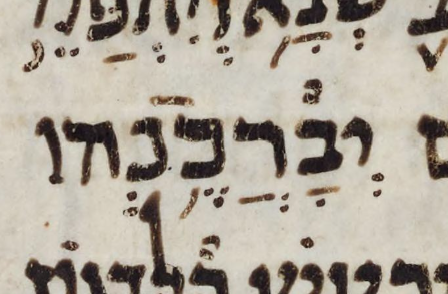

← Back to the case register.
Aleppo has no meteg after the silluq at Ps. 72:15.
Leningrad has a meteg after the silluq at Ps. 72:15.

Cambridge has no meteg after the silluq at Ps. 72:15.

Sassoon has no meteg after the silluq at Ps. 72:15.
